Overview
Multi-Language Support is a feature that allows translation files to switch the language of the Dynaform according to your needs. Designers can download a .po file with labels created within the Dynaform and perform the corresponding translation for any language. The translation file is used without needing to create a new form for that language.
The Language option is at the top of the Dynaform designer, in the right-hand corner of the window.
|
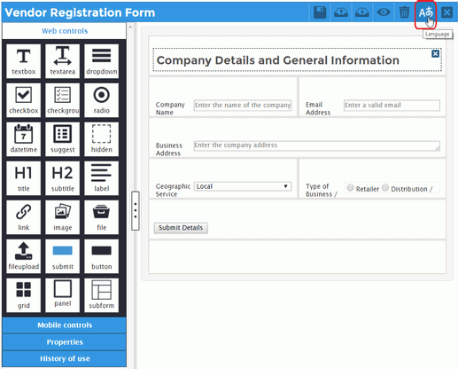
|
Using the Languages Window to Access a Dynaform Translation File
The designer generates a .po file that contains the labels of the controls as well as other labels used in the properties of the controls, placeholders, hints and default values, that are in the Dynaform.
To download the Dynaform's .po file, click on the  option in the Dynaform panel and the Languages window will display a list of the .po files for the Dynaform.
option in the Dynaform panel and the Languages window will display a list of the .po files for the Dynaform.
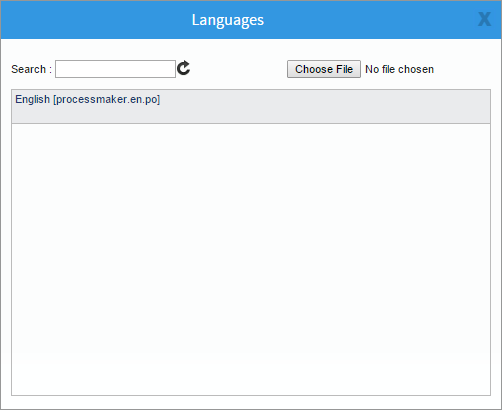
When a .po file is created, it is named processmaker.en.po by default and its header is set to the English language by default (although the original strings in the form may not be in English). Use the Languages window in the following ways:
- Click within Search field to search for a .po file configured for the Dynaform.
- Click the Choose File button to upload a new .po file for the Dynaform.
- Click on the name of a .po file to download it to your local machine.
- Click on the name of a .po file, and then click the Delete button to remove that .po file.
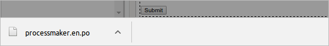
Characteristics of a .po Language File
A .po file has the following format:
A header:
"msgid "" "msgstr "" "Project-Id-Version: PM 4.0.1\n" "POT-Creation-Date: \n" "PO-Revision-Date: 2010-12-02 11:44+0100 \n" "Last-Translator: ColosaA body:
msgid "Company Details and General Information" msgstr "Company Details and General Information" ... msgid represents the control property's ID msgstr represents the control property's label (to be changed in any language) ...Note: Blank msgids may be deleted from the .po file. Make sure that each msgstr is enclosed in double quotes. Be careful NOT to change the msgid strings, since they are used to identify the translation string.
The first part contains the information about the translation file:
- Project-Id-Version
- POT-Creation-Date
- PO-Revision-Date
- Last-Translator
- Language-Team
- MIME-Version
- Content-Type
- Content-Transfer_Encoding
- X-Poedit-Language
- X-Poedit-Country (To clarify the country)
- X-Poedit-SourceCharset
- Content-Transfer-Encoding
- File-Name (The name can be changed)
The second part contains the original strings from the Dynaform in the msgid and their translations in the msgstr:
Creating a .po File
To demonstrate how to create a new file translated into different languages, the Dynaform used as an example is called "Vendor Registration Form" from the Vendor Registration process.

|
The web controls used in this Dynaform are:
- "Company Details and General Information" -> Title
- "Company Name" -> Text
- "Email Address" -> Text
- "Business Address" -> Textarea
- "Geographic Service Area" -> Dropdown
- "Type of Business / Commodity service" -> Radio
- "Submit Details" -> Submit
Click the language option, and then click the English file in the Languages windows to download it.
|
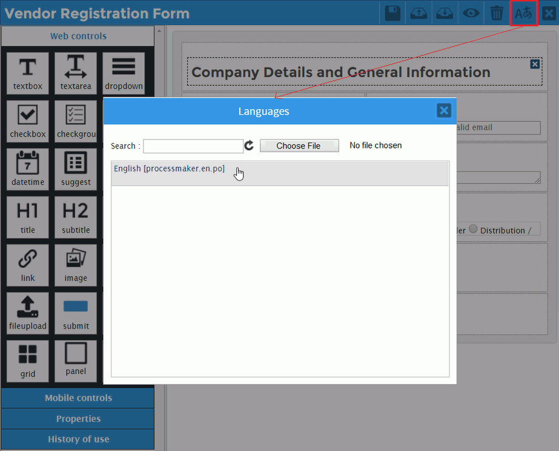
|
The downloaded file can be edited in an editor. In this file, there are two strings for each web control: "msgid" and "msgstr". For the translation, the "msgstr" values will be modified.
The .po file related to the "Vendor Registration Form" is generated as:
When editing the translation file, consider the following:
- It is recommended to rename the .po file to form-name.language.po so that it is easier to remember the file is used for a particular Dynaform and language. language is an ISO code in the format xx or xx-CC where xx is the two letter ISO 639-1 language code in lower case and CC is the two letter ISO 3166-1 country code, which is only included if needing to distinguish variants of languages in different countries.
- In this example, the new file is given the name
productDevelopment.es.powhere "es" refers to the Spanish language and there is no country code. - The translation of the label must be made only in the
msgstrstring. Do not change themsgidbecause must match the original string found in the Dynaform. - Make sure that the
msgstris always enclosed in double quotes. msgids which are blank can be deleted from the .po file.- When manually editing a .po file, change the following settings in the header:
- X-Poedit-Language: language-name
- X-Poedit-Country: country-name
- File-Name: file.po
The new translation file can be created using a plain text editor or Poedit, an open source PO translation editor.
After editing .po file, upload it to each Dynaform where it will be used.
Using a Plain Text Editor
The .po file can be translated manually using any plain text editor, such as Notepad++, Brackets or UltraEdit for Windows and vim or gedit for Linux.
Open the .po file in your favorite editor and translate all the msgstr strings.
Do not forget to update the following properties to the new language. In this example:
- "X-Poedit-Language: Spanish\n"
- "X-Poedit-Language: Bolivia\n"
- "File-Name processmaker.es.po\n"

|
The new translation file looks like:
After editing you need to save the file with the name according to your needs and then open it in a Poedit and saved to create the format .po, and then it is ready to be used.
Using Poedit
Poedit is an easy open-source translation editor available for Mac OS X, Windows and UNIX/Linux.
|
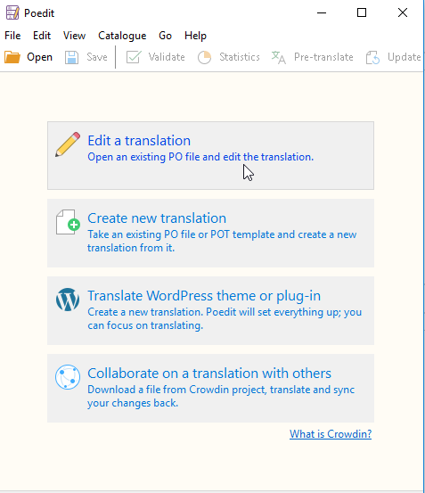
|
To use Poedit with a Dynaform's .po file, follow these steps:
- 1. Install Poedit.
- 2. Click the Edit a translation option, and then open a downloaded .po file from a Dynaform.
- 3. Poedit displays an Invalid file message. Click OK to continue.
- 4. Click Fix language.
- 5. In the Language option, change the source language (English) into the target language (in this example, Spanish).
- 6. Add the name and the email address in the Language team field so people can contact you with revisions and updates about the translation.
- 7. Select Use default rules for this language option.
- 8. Set the Charset and Source code charset to UTF-8.
- 9. Click OK to save the changes.
- 10. Click Pre-translate.
- 11. Select Only fill in exact matches check box.
- 12. Click Pre-translate.
- 13. Select a sentence to translate from English to the target language. (in this example into Spanish). Suggestions appear in the Translation suggestions section. If the translations suggested are not displayed, go to View > Show sidebar menu, or press Alt+Ctrl+S keys.
- 14. You can select the best match
- 15. For each line, select the best translation suggestion.
- 16. Once done, click Save using the PO Translation File (*.po) file type using the naming style suggested earlier or with the file name according to your needs.
- 1. Click the option in the Dynaform menu. The Languages window displays.
- 2. Choose File to upload the processmaker.es.po file created as an example. The new translation file uploaded to the Dynaform and listed in the panel, as shown in the image below:
- 1. Click on the gray border of the Dynaform to display its properties as shown in the image below.
- 2. From the properties section, select the Spanish (es) option from the language drop-down.
- 3. Click Preview.
- 1. Locate and select the English-language code (en) in the URL, as shown in the image below.
- 2. Revise the selected code to the Spanish-language code (es), as shown in the image below.
- 3. Refresh the web browser screen by pressing ENTER in the navigation bar, or pressing CTRL+R to display the new language in the Dynaform.

|

|
The Catalogue properties displays.

|
You can modify these properties going to Catalogue > properties menu option.
.png)
|
Poedit displays the list of labels that will be translated on the right column of the window.
|
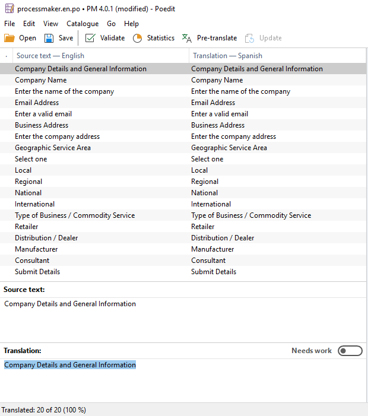
|
|
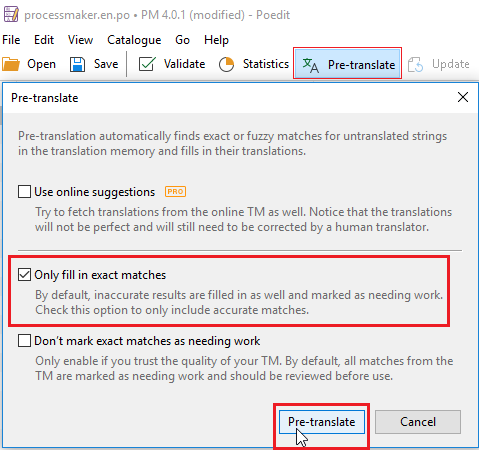
|
|
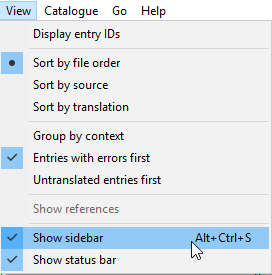
|
|
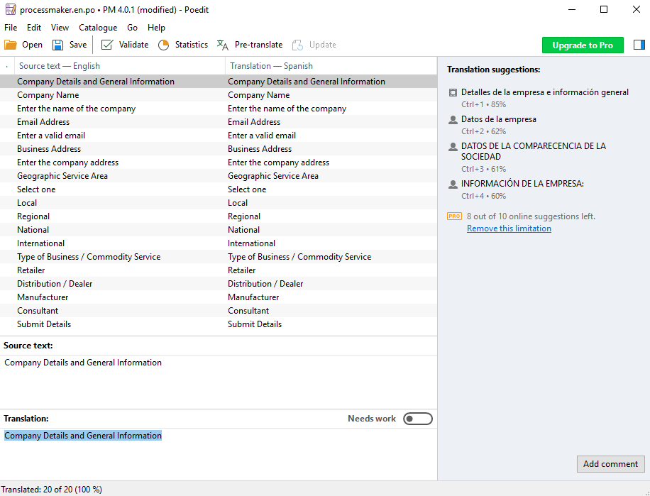
|
In this example, the first suggestion matches better.
|
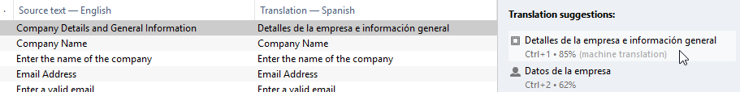
|
|
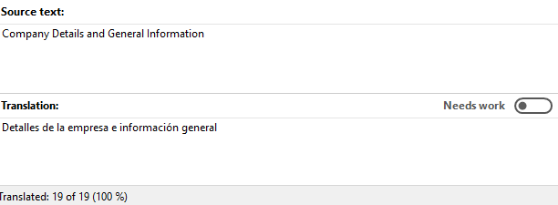
|
You can modify the translation according to your needs.
|
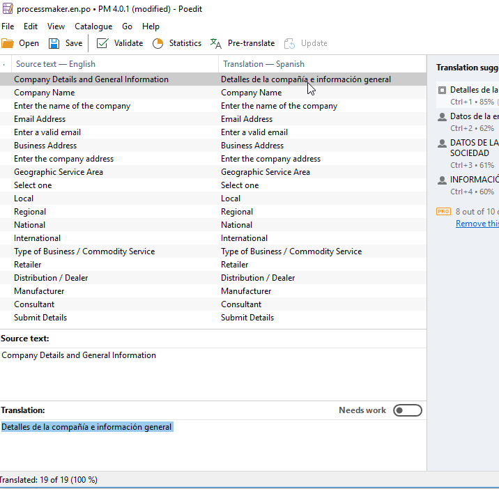
|
processmaker.<LANGUAGE>.po or filename.po
In this example, the new file will be named processmaker.es.po.

|
The .po file is ready to be used.
Uploading the Translated .po File into the Dynaform
To upload the .po translation file to the Dynaform, follow these steps:
|
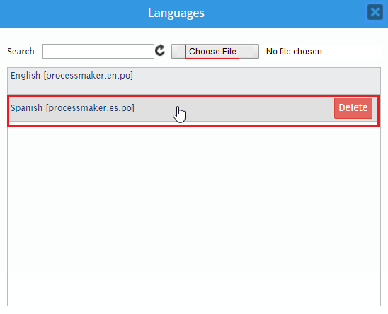
|
To remove the translation file upload, click Delete.
Now, to see the translated Dynaform within the process. See the section How the translated Dynaform looks.
How the Translated Dynaform Looks
To view the translated Dynaform follow these steps:
|
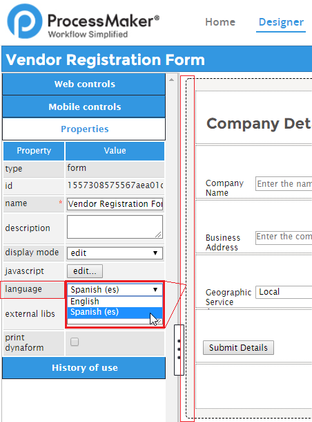
|
|
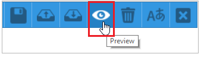
|
The dynaform is translated to the target language. (in this example Spanish).
|
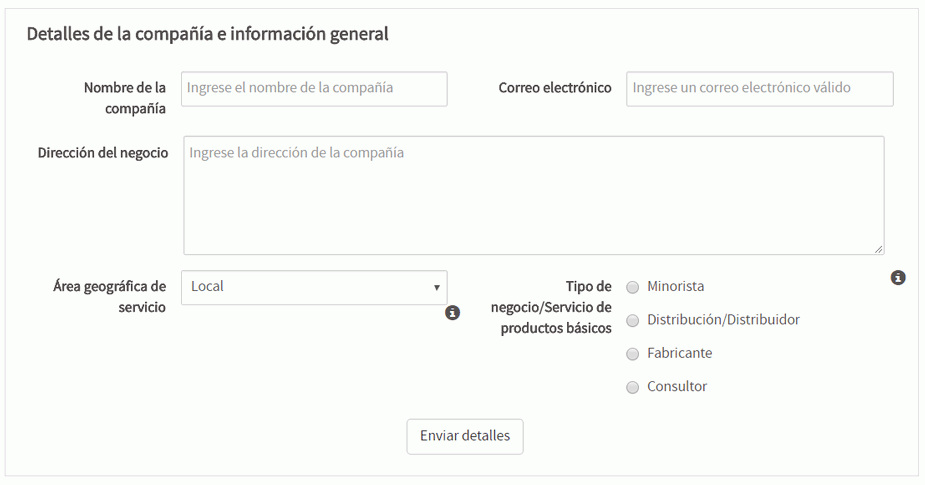
|
Changing the Dynaform Language in the URL
The current system language is automatically selected when loading the Dynaform if there is a .po file available for that language. Otherwise, the Dynaform displays the field labels in the original design of the Dynaform.
For example, if the system language is "en", then the English-language .po file is used, but if the system language is "es", then the Spanish-language .po file is used. However, if the system language is "jp", but there is no Japanese .po file uploaded for the Dynaform, then the phrases used in the Dynaform Designer is used.
Therefore, if the user logs into ProcessMaker with the English language, the Dynaform displays the English-language file.

|
To manually change the displayed Dynaform language in a URL, change the 639-1 ISO language code inmediately after sysworkflow/ in the URL. For example, to change the displayed Dynaform language from English to Spanish, follow these steps.

|

|
The Dynaform shows all labels translated.
|
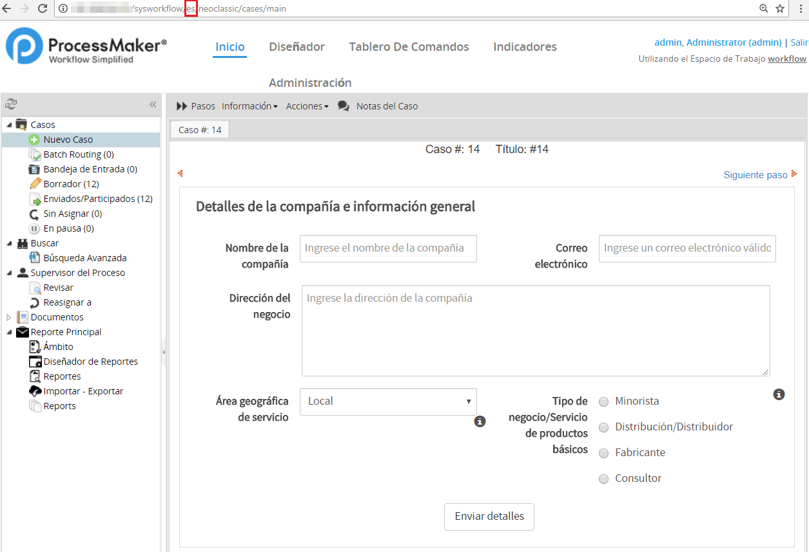
|
A .po file may use any filename, but it needs to have the correct language listed in the PO header:
For example, if the URL is:
http:/example.com/sysworkspace/pr-BR/neoclassic/cases/main
Then, the .po file should have the following lines in the header:
Translating Many Dynaforms
If you have many Dynaforms to translate, export all the .po files for all the Dynaforms to a plain text editor and then cut and paste all the phrases to be translated into one .po file for the entire process.
Example: Add these strings to the processmaker.es.po file in your favorite editor.
After you have added all these strings, save the file with a filename according to your needs. In this example, the name is alldynaformstranslatedin.es. Open the .po file into Poedit editor, save it with format .po, and then upload the file into the Dynaform.
|
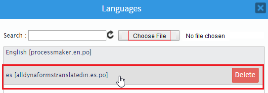
|
Close the windows by clicking the X button.

|
It does not matter whether you use a different .po file for each Dynaform or a single .po file for the entire process. In each DynaForm, you need to upload the .po file for each language that you want to support. You will not see the language change in the DynaForm Designer. When running a case, ProcessMaker will select the .po file for the language in the URL, which is also the language selected during login, but you can change it in the web browser's address bar:
Continuing with the example, you will see all the labels translated in all dynaforms.
|
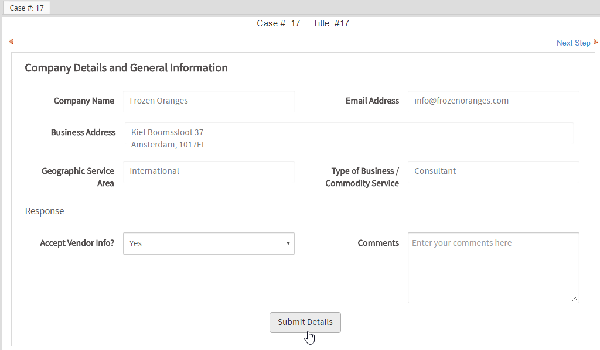
|

|